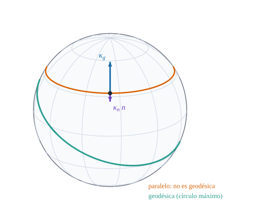

11Curvas sobre superficies: geodésicas y compatibilidad
Curvatura normal y geodésica, el Theorema Egregium y las ecuaciones de Codazzi

Figura 11.1: Una esfera con una geodésica (círculo máximo, verde) y un paralelo (naranja). En un punto del paralelo, el vector de curvatura de la curva se descompone en una parte normal\(\kappa_n\,\hat{\mathbf{n}}\) (violeta) y una parte geodésica\(\kappa_g\) tangente a la superficie (azul). Las componentes se calculan con curvaturas_curva y se verifica \(\kappa^2=\kappa_n^2+\kappa_g^2\).
Cuáles son las rectas de una superficie curva, y qué parte de la curvatura es del espacio y qué parte es de la propia superficie
Objetivos y prerrequisitos
Objetivos. Al terminar el tema sabrás:
descomponer la curvatura de una curva sobre una superficie en curvatura normal y curvatura geodésica;
definir las geodésicas, escribir su ecuación con los símbolos de Christoffel e integrarla numéricamente;
enunciar el Theorema Egregium y calcular \(K\)solo con la métrica;
enunciar las ecuaciones de Gauss y de Codazzi–Mainardi como condiciones de compatibilidad de \(a_{\alpha\beta}\) y \(b_{\alpha\beta}\);
verificar todo en Julia sobre la esfera, el cilindro y el paraboloide hiperbólico.
Sea \(\mathbf{x}(s)\) una curva de la superficie parametrizada por longitud de arco, con tangente unitaria \(\mathbf{T}=\mathbf{x}'\). Su vector de curvatura es \(\mathbf{x}''=\kappa\,\mathbf{N}\), y puede descomponerse en la base \(\{\mathbf{T},\ \hat{\mathbf{a}}_3\times\mathbf{T},\ \hat{\mathbf{a}}_3\}\) (la segunda dirección es tangente a la superficie y perpendicular a la curva):
Definición 11.1 (Curvatura normal y curvatura geodésica)\[
\mathbf{x}''=\kappa_n\,\hat{\mathbf{a}}_3+\kappa_g\,(\hat{\mathbf{a}}_3\times\mathbf{T}),\qquad
\kappa_n=\hat{\mathbf{a}}_3\cdot\mathbf{x}'',\quad
\kappa_g=\hat{\mathbf{a}}_3\cdot(\mathbf{x}'\times\mathbf{x}''),\qquad \kappa^2=\kappa_n^2+\kappa_g^2 .
\tag{11.1}\]\(\kappa_n\) es la curvatura normal (la del tema anterior, \(\kappa_n=b_{\alpha\beta}\lambda^\alpha\lambda^\beta\)) y \(\kappa_g\) la curvatura geodésica. Para una curva con parámetro cualquiera, \(\kappa_n=\hat{\mathbf{a}}_3\cdot\mathbf{x}''/|\mathbf{x}'|^2\) y \(\kappa_g=\hat{\mathbf{a}}_3\cdot(\mathbf{x}'\times\mathbf{x}'')/|\mathbf{x}'|^3\).
La curvatura normal depende de cómo está la superficie en el espacio. La geodésica, en cambio, se puede medir sin salir de la superficie: es lo que se curva la curva «vista desde dentro» (se cuenta cuánto gira respecto de la dirección «recta» de la superficie).
Ejemplo 11.1 (Ejemplo resuelto: el paralelo de una esfera) Sobre la esfera de radio \(\rho\) (normal saliente), el paralelo de colatitud \(\theta_0\) es una circunferencia de radio \(\rho\sin\theta_0\), de modo que su curvatura es \(\kappa=1/(\rho\sin\theta_0)\). Su vector de curvatura apunta al eje de la circunferencia. Su componente normal es \[
\kappa_n=\hat{\mathbf{a}}_3\cdot\mathbf{x}''=-\frac{\sin\theta_0}{\rho\sin\theta_0}=-\frac1\rho ,
\] y la geodésica, por Pitágoras, \[
|\kappa_g|=\sqrt{\kappa^2-\kappa_n^2}=\frac1\rho\sqrt{\frac1{\sin^2\theta_0}-1}=\frac{|\cot\theta_0|}{\rho} .
\] Con \(\rho=1\) y \(\theta_0=1\) rad, \(|\kappa_g|=\cot1=0{,}642\). En el ecuador (\(\theta_0=\pi/2\)), \(\kappa_g=0\): es una geodésica. Un paralelo cerca del polo, en cambio, tiene \(|\kappa_g|\) enorme: se curva mucho «dentro de la esfera».
Pon a prueba lo anterior. Los ejercicios se corrigen en tu navegador y no envían nada a ningún sitio.
En una esfera de radio \(1\), ¿cuánto vale \(|\kappa_g|\) del paralelo de colatitud \(\theta_0=1\) rad?
\(|\kappa_g|=|\cot\theta_0|/\rho=\cot1=0{,}642\).
El ecuador de una esfera es una geodésica.
Verdadero. Su vector de curvatura apunta al centro de la esfera, es decir, es normal a la superficie: \(\kappa_g=0\).
11.2 Geodésicas
Definición 11.2 (Geodésica) Una curva de la superficie es una geodésica si su curvatura geodésica es nula en todos sus puntos: \(\kappa_g=0\). Equivale a que \(\mathbf{x}''\) sea normal a la superficie, o a que se cumpla \[
\frac{d^2\theta^\gamma}{ds^2}+\bar\Gamma^\gamma_{\alpha\beta}\,\frac{d\theta^\alpha}{ds}\frac{d\theta^\beta}{ds}=0,\qquad\gamma=1,2 .
\tag{11.2}\]
Con la fórmula de Gauss, la parte tangente de \(\mathbf{x}''=\dfrac{d}{ds}(\mathbf{a}_\alpha\dot\theta^\alpha)\) es \(\bigl(\ddot\theta^\gamma+\bar\Gamma^\gamma_{\alpha\beta}\dot\theta^\alpha\dot\theta^\beta\bigr)\mathbf{a}_\gamma\) y la normal es \(b_{\alpha\beta}\dot\theta^\alpha\dot\theta^\beta\,\hat{\mathbf{a}}_3\). La condición \(\kappa_g=0\) equivale a que la parte tangente sea nula, que es ecuación 11.2. \(\blacksquare\)
Dos consecuencias importantes:
las geodésicas conservan la rapidez\(\sqrt{a_{\alpha\beta}\dot\theta^\alpha\dot\theta^\beta}\) (el parámetro es proporcional a la longitud de arco);
son los caminos que localmente minimizan la distancia (pero no siempre globalmente: en la esfera, un arco de círculo máximo de más de \(180^\circ\) no es el más corto).
Superficie
Geodésicas
Plano
rectas
Cilindro
hélices (y generatrices y circunferencias horizontales)
Esfera
círculos máximos
Cono
rectas al desarrollarlo sobre el plano
AdvertenciaErrores frecuentes
Geodésica no es «la más corta»: es un camino localmente más corto; entre dos puntos puede haber varias (en la esfera, dos arcos de círculo máximo).
Geodésica no es «recta en el espacio»: sobre una superficie curva, una geodésica sí se curva en el espacio (\(\kappa_n\ne0\)); lo que no tiene es curvatura geodésica.
Pon a prueba lo anterior.
Una geodésica es siempre el camino más corto entre dos puntos de la superficie.
Falso. Es el más corto solo localmente. En la esfera, el arco largo de un círculo máximo es geodésica pero no es el más corto entre sus extremos.
11.3 El Theorema Egregium
La curvatura de Gauss \(K=\kappa_1\kappa_2=\det(b_{\alpha\beta})/\det(a_{\alpha\beta})\) se define con la segunda forma fundamental, que depende de cómo está la superficie en el espacio. Sin embargo:
Teorema 11.1 (Theorema Egregium (Gauss)) La curvatura de Gauss \(K\) depende solo de la primera forma fundamental\(a_{\alpha\beta}\) y de sus derivadas: es una propiedad intrínseca. En particular, no cambia al doblar (sin estirar) la superficie.
Para una superficie con métrica ortogonal (\(a_{12}=0\), \(E=a_{11}\), \(G=a_{22}\)), \[
K=-\frac1{2\sqrt{EG}}\left[\frac{\partial}{\partial\theta^1}\!\left(\frac{G_{,1}}{\sqrt{EG}}\right)+\frac{\partial}{\partial\theta^2}\!\left(\frac{E_{,2}}{\sqrt{EG}}\right)\right] .
\tag{11.3}\] En el caso general se usa la fórmula de Brioschi, que solo contiene \(E,F,G\) y sus derivadas primeras y segundas.
La demostración se apoya en las ecuaciones de Gauss de la sección siguiente. La fórmula general está implementada en Geometria (curvatura_gauss_brioschi) y se comprueba numéricamente contra \(\det(b)/\det(a)\) en la práctica.
Ejemplo 11.2 (Ejemplo resuelto: \(K\) de la esfera solo con la métrica) Con \((\theta^1,\theta^2)=(\theta,\varphi)\) y la métrica \(E=\rho^2\), \(G=\rho^2\sin^2\theta\) (ortogonal), \(\sqrt{EG}=\rho^2\sin\theta\). Entonces \(G_{,1}=2\rho^2\sin\theta\cos\theta\), \(G_{,1}/\sqrt{EG}=2\cos\theta\), \(\partial_\theta(2\cos\theta)=-2\sin\theta\), y \(E_{,2}=0\). Por ecuación 11.3, \[
K=-\frac1{2\rho^2\sin\theta}\,(-2\sin\theta)=\frac1{\rho^2},
\] exactamente el valor que da \(\det(b)/\det(a)\): sin usar la segunda forma.
TipIdea clave
Un plano y un cilindro tienen \(K=0\) y la misma métrica local: se pueden desarrollar uno sobre otro sin estirar (un papel enrollado). Una esfera tiene \(K>0\): no hay forma de aplanarla sin deformar las longitudes, por eso todo mapa del mundo distorsiona. Para las láminas, esto significa que una forma de doble curvatura (\(K\neq0\)) no puede cambiar de forma sin estirarse (esfuerzos de membrana), mientras que las de \(K=0\) pueden doblarse libremente.
NotaUn poco de historia: un teorema «excelente»
En sus Disquisitiones generales circa superficies curvas (Göttingen, 1827; algunas ediciones dan 1828), Gauss llamó a este resultado Theorema Egregium —el «teorema excelente»—. Motivado por la geodesia, Gauss probó que la curvatura que Euler definía con ayuda del espacio ambiente se podía calcular desde dentro de la superficie, midiendo solo distancias. Antes, la teoría de Euler no era invariante frente a isometrías: al doblar un plano para formar un cilindro, la curvatura calculada cambiaba. Según un resumen de la historia, la primera versión de la demostración estaba terminada en 1825, dos años antes de su publicación.
\(K\) se puede calcular solo con la primera forma fundamental
\(K\) cambia al doblar la superficie sin estirarla
La curvatura normal es intrínseca
\(K\) es intrínseca: depende solo de \(a_{\alpha\beta}\) y de sus derivadas, y no cambia al doblar sin estirar. La curvatura normal, en cambio, no es intrínseca.
11.4 Compatibilidad: ecuaciones de Gauss y de Codazzi
No se pueden elegir \(a_{\alpha\beta}\) y \(b_{\alpha\beta}\) arbitrariamente: para que exista una superficie con esas formas fundamentales, deben cumplir condiciones de compatibilidad, que salen de exigir que las derivadas cruzadas de las fórmulas de Gauss y de Weingarten coincidan (\(\partial_\gamma\partial_\beta\mathbf{a}_\alpha=\partial_\beta\partial_\gamma\mathbf{a}_\alpha\)).
Proposición 11.1 (Ecuaciones de Gauss y de Codazzi–Mainardi)
Gauss:\(K=\det(b_{\alpha\beta})/\det(a_{\alpha\beta})\) coincide con la expresión que depende solo de \(a_{\alpha\beta}\) (el Theorema Egregium, Teorema 11.1).
Codazzi–Mainardi: la derivada covariante en la superficie de \(b_{\alpha\beta}\) es simétrica: \[
b_{\alpha\beta\|\gamma}=b_{\alpha\gamma\|\beta},\qquad b_{\alpha\beta\|\gamma}=\partial_\gamma b_{\alpha\beta}-\bar\Gamma^\mu_{\alpha\gamma}b_{\mu\beta}-\bar\Gamma^\mu_{\beta\gamma}b_{\alpha\mu} .
\tag{11.4}\] Recíprocamente (teorema de Bonnet), dados \(a_{\alpha\beta}\) definida positiva y \(b_{\alpha\beta}\) simétrica que cumplan Gauss y Codazzi existe una superficie (única salvo movimientos rígidos) con esas formas fundamentales.
Estas ecuaciones son el análogo geométrico de las condiciones de compatibilidad de las deformaciones de un sólido; reaparecerán en el bloque de elasticidad al plantear las deformaciones de una lámina.
NotaIdea de la demostración
Se parte de \(\partial_\gamma(\mathbf{a}_{\alpha,\beta})=\partial_\beta(\mathbf{a}_{\alpha,\gamma})\) con ecuación 9.3: sustituyendo \(\mathbf{a}_{\alpha,\beta}=\bar\Gamma^\mu_{\alpha\beta}\mathbf{a}_\mu+b_{\alpha\beta}\hat{\mathbf{a}}_3\) y derivando con ecuación 9.3 y ecuación 9.4, la parte normal de la igualdad da ecuación 11.4 y la parte tangente da la ecuación de Gauss. El teorema recíproco de Bonnet es un resultado de existencia para sistemas de ecuaciones en derivadas parciales (Frobenius) que no se demuestra aquí (Carmo 1994; Struik 1955). \(\square\)
Pon a prueba lo anterior.
Se pueden elegir \(a_{\alpha\beta}\) y \(b_{\alpha\beta}\) arbitrarios (simétricos y con \(a\) definida positiva) y siempre existe una superficie con esas formas fundamentales.
Falso. Hacen falta las condiciones de compatibilidad de Gauss y de Codazzi–Mainardi.
11.5 Práctica guiada en Julia
TipEjemplo computacional
calculado Se calculan \(\kappa_n\), \(\kappa_g\) del paralelo de una esfera, se integra una geodésica y se comprueban el Theorema Egregium y las ecuaciones de Codazzi.
# Una geodésica de la esfera: integra θ̈ᵞ = −Γᵞαβ θ̇ᵅ θ̇ᵝ y comprueba que es un círculo máximoS =esfera(1.0)θs, vs =geodesica(S, [π/2, 0.0], [0.3, 0.7]; T =2.0, n =200)rapidez(θ, v) =sqrt(v'*metrica_superficie(S, θ) * v)P =hcat([S(θs[:, k]) for k in1:size(θs, 2)]...)(rapidez_inicial =rapidez(θs[:, 1], vs[:, 1]), rapidez_final =rapidez(θs[:, end], vs[:, end]), en_un_plano_por_el_origen =abs(det(hcat(P[:, 1], P[:, 100], P[:, 200]))) <1e-5)
Las mismas identidades están en julia/test/runtests.jl (conjunto «Superficies tipo, curvas y Theorema Egregium»).
11.6 Ejercicios
Cilindro. Demuestra que las hélices \(\theta^1=\omega s\), \(\theta^2=\beta s\) son geodésicas del cilindro (sin cálculo, usando el desarrollo en un plano) y verifica ecuación 11.2 con los \(\bar\Gamma\) del cilindro.
NotaSolución
La métrica es constante (todos los \(\bar\Gamma=0\)) y ecuación 11.2 queda \(\ddot\theta^\gamma=0\): \(\theta^\gamma\) lineales en \(s\), que son las hélices (y generatrices y circunferencias horizontales como casos particulares).
Latitud. ¿A qué latitud (colatitud \(\theta_0\)) tiene el paralelo de una esfera \(|\kappa_g|=1/\rho\)?
NotaSolución
\(|\cot\theta_0|=1\) da \(\theta_0=45^\circ\) (o \(135^\circ\)).
Egregium en el cono. Calcula \(K\) de un cono solo con su métrica, \(E=1\), \(G=t^2\sin^2\alpha\) (\(t\) distancia al vértice).
NotaSolución
Con \(\theta^1=t\), \(\theta^2=\varphi\) y \(\sqrt{EG}=t\sin\alpha\): \(G_{,1}/\sqrt{EG}=2\sin\alpha\) (constante), su derivada es cero y \(E_{,2}=0\): \(K=0\).
Con Julia. Integra con geodesica una geodésica en el paraboloide hiperbólico desde \((0{,}2;\,0)\) con velocidad \((1;\,0{,}5)\) y comprueba que \(\kappa_g\approx0\) en varios puntos con curvaturas_curva.
NotaSolución
Con θs, vs = geodesica(paraboloide_curvo(3.0,-2.0), [0.2,0.0], [1.0,0.5]; T=1.0, n=200), las posiciones X(k) = r(θs[:, k]) y diferencias centradas en el paso h = 1/200 para \(\mathbf{x}'\) y \(\mathbf{x}''\), se obtiene \(|\kappa_g|=\hat{\mathbf{a}}_3\cdot(\mathbf{x}'\times\mathbf{x}'')/|\mathbf{x}'|^3\approx10^{-7}\) en \(k=50,100,150\) (error de la integración).
La doy por superada si…
Descompongo la curvatura de una curva de la superficie en parte normal (\(\kappa_n\)) y geodésica (\(\kappa_g\)).
Escribo la ecuación de las geodésicas con \(\bar\Gamma\) y sé qué geodésicas tienen el plano, el cilindro y la esfera.
Enuncio el Theorema Egregium y calculo \(K\) solo con la métrica en un caso sencillo.
Sé que \(a_{\alpha\beta}\) y \(b_{\alpha\beta}\) deben cumplir Gauss y Codazzi–Mainardi.
Fuentes. Texto autónomo, resultados estándar (Carmo 1994; Struik 1955; Lipschultz 1969; Weatherburn 1927). Las curvaturas de curvas, las geodésicas, el Theorema Egregium (Brioschi) y Codazzi se verifican con Geometria.
Qué queda pendiente. El enunciado completo de la fórmula de Brioschi no se transcribe (solo el caso ortogonal); la demostración del teorema de Bonnet y la de Gauss–Codazzi se esbozan; figuras y notas históricas con revisión pendiente; referencias no leídas línea a línea.
Weatherburn, C. E. 1927. Differential Geometry. Cambridge Press.
Lipschultz, M. 1969. Differential Geometry. Schaum’s Outlines.
Struik, D. J. 1955. Geometría Diferencial Clásica. Aguilar.
Carmo, M. do. 1994. Geometría diferencial de curvas y superficies. Alianza Universidad.
Referencias
Son las mismas que aparecen en el margen, junto al texto.
Carmo, M. do. 1994. Geometría diferencial de curvas y superficies. Alianza Universidad.
Lipschultz, M. 1969. Differential Geometry. Schaum’s Outlines.
Struik, D. J. 1955. Geometría Diferencial Clásica. Aguilar.
Weatherburn, C. E. 1927. Differential Geometry. Cambridge Press.